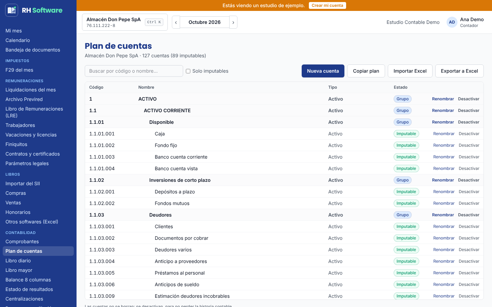
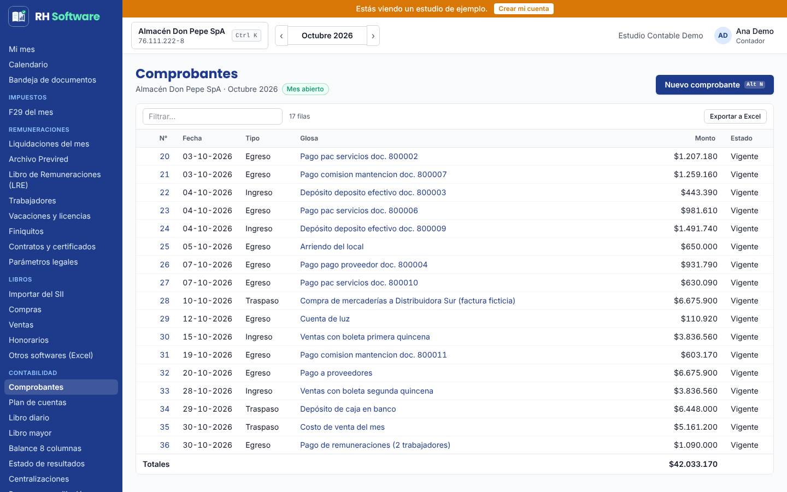
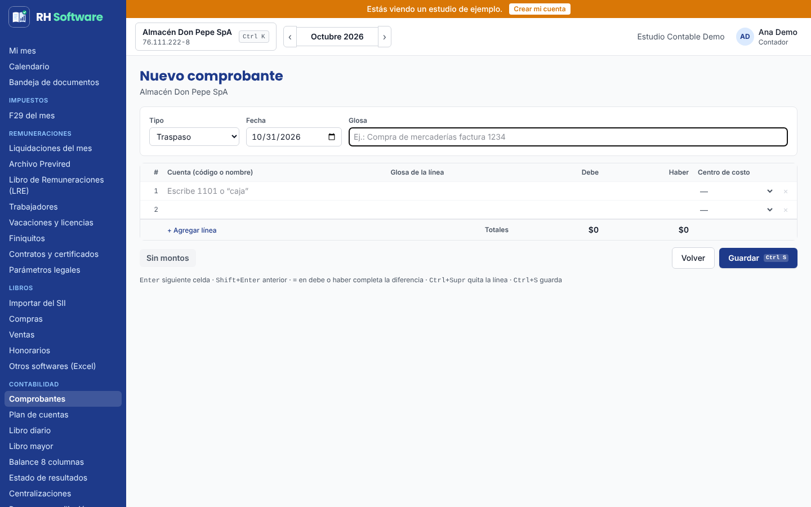
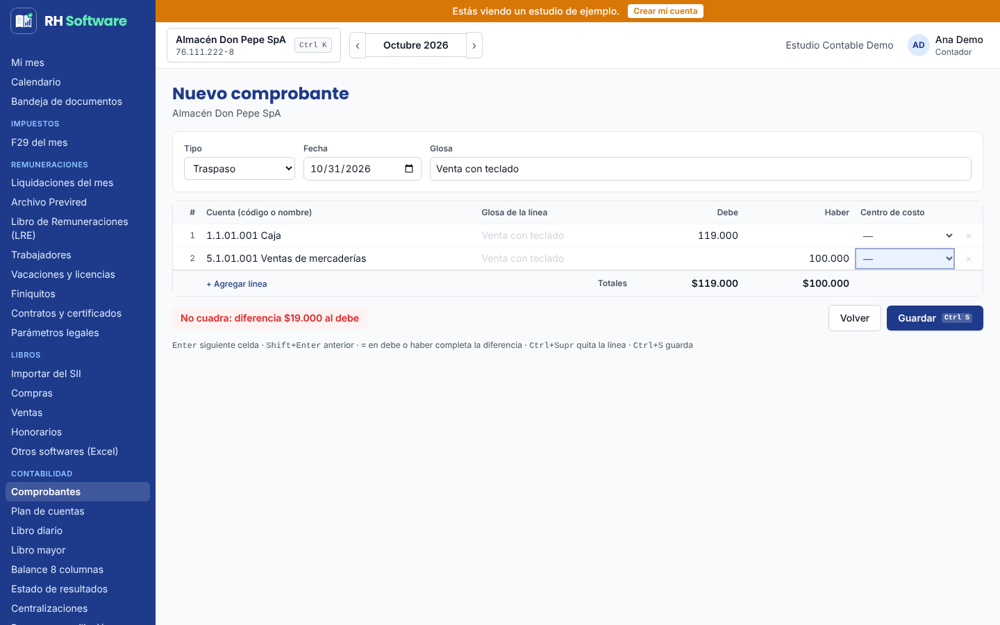
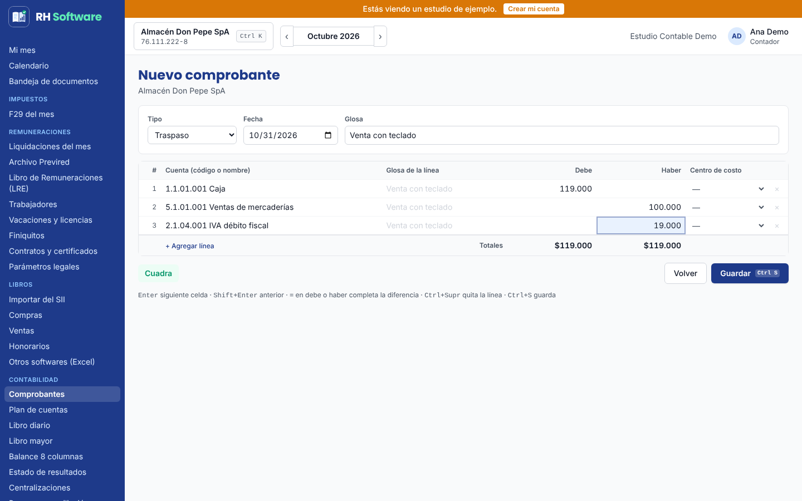
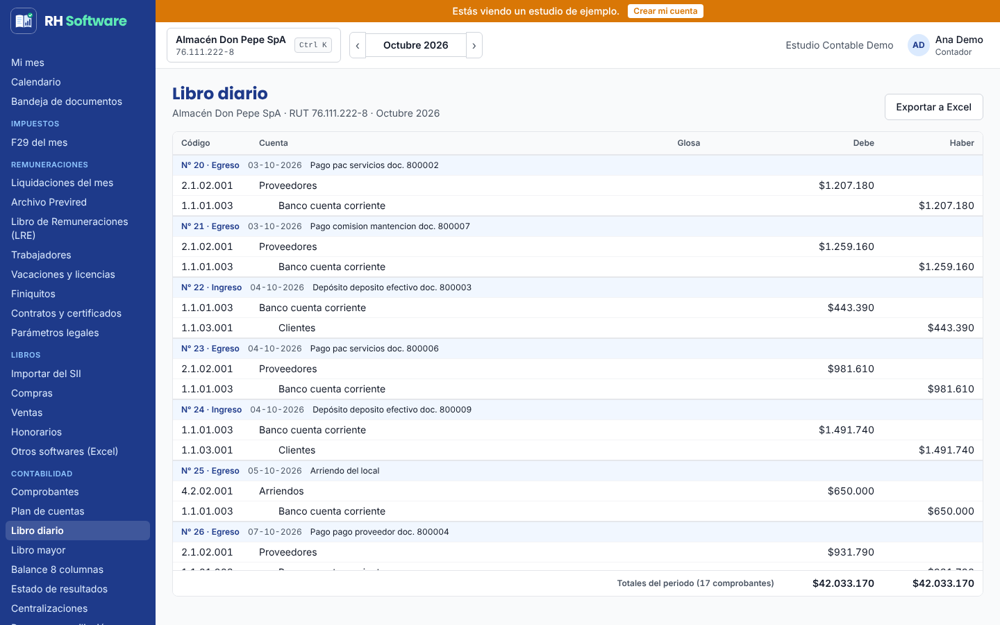
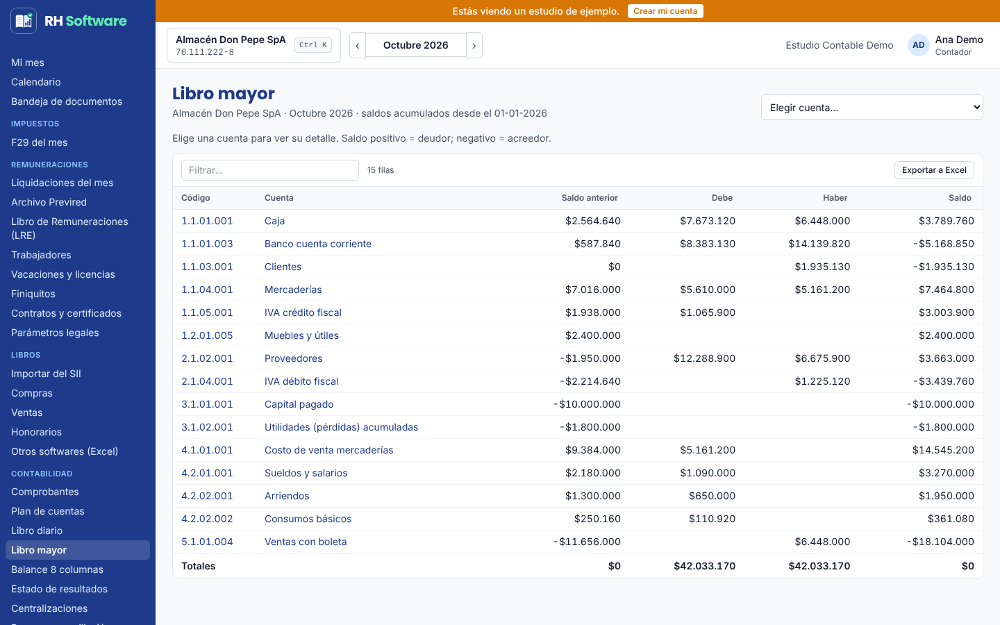
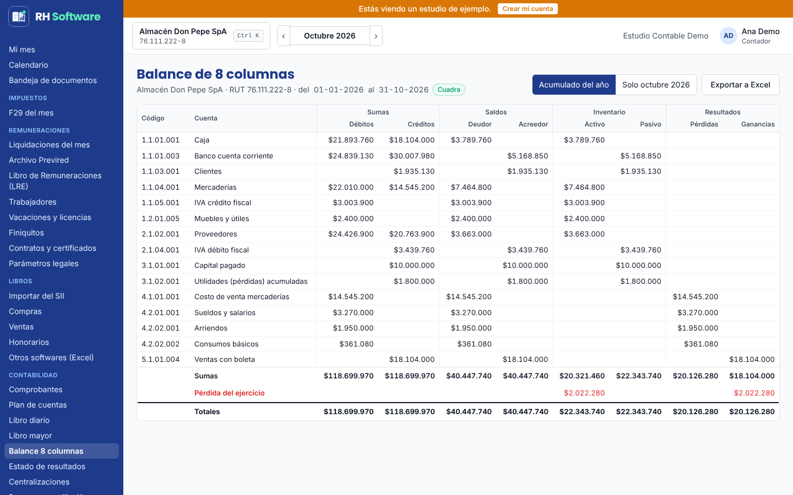
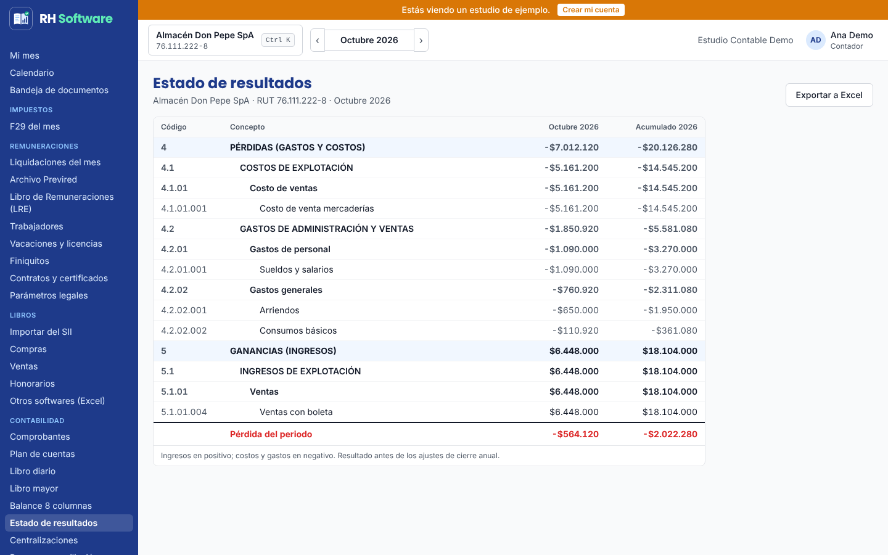
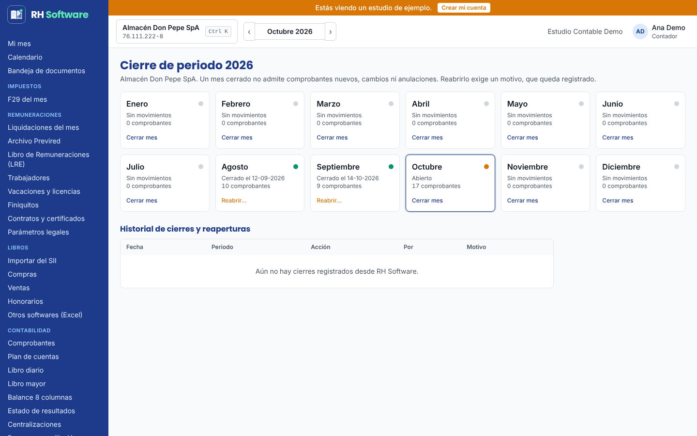

Fase 2: Contabilidad base Plan de cuentas (plantilla pyme e importación desde Excel), comprobantes con ingreso por teclado y validación debe = haber, libro diario, mayor, balance de 8 columnas, estado de resultados y cierre de periodo.
Recorrido en video Pantallas en orden de uso
1 Plan de cuentas: plantilla base para pymes chilenas, ajustable por empresa, importable desde Excel y copiable a otra empresa.
2 Comprobantes del mes con totales siempre visibles, filtros, orden por columna y exportación a Excel.
3 Nuevo comprobante (atajo Alt+N): Enter avanza de celda y la cuenta se busca escribiendo el código o el nombre.
4 Estado de error: el comprobante no cuadra (falta el IVA). La diferencia se marca en rojo y no deja guardar.
5 Con la tecla “=” se completa la diferencia en la última línea: ahora cuadra y se guarda con Ctrl+S.
6 Libro diario del mes, exportable a Excel y PDF.
7 Libro mayor por cuenta con saldo acumulado.
8 Balance de 8 columnas (sumas, saldos, inventario y resultados) con totales que cuadran.
9 Estado de resultados del periodo.
10 Cierre de periodo: bloquea el mes. Reabrirlo exige un motivo, que queda en la auditoría.
Qué debe verificar la socia contadora La plantilla del plan de cuentas (códigos y nombres). El balance de 8 columnas y el estado de resultados del Almacén de octubre.